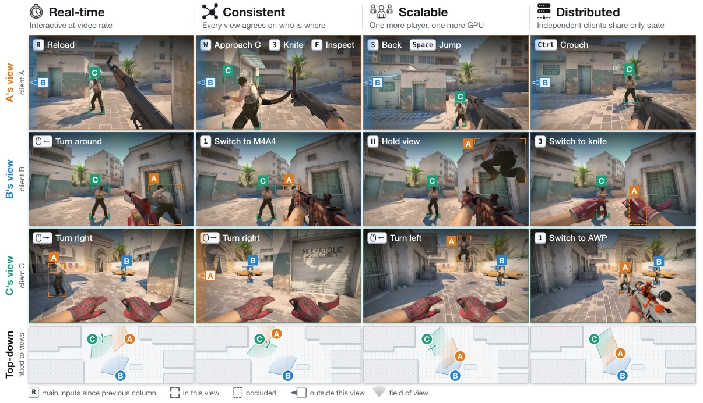

WORLDCASTIndependent views. Shared worlds.
Latest research · arXiv 2026
WorldCast: Distributed Multiplayer World Models
A distributed approach to multiplayer world generation: each player generates a local view while exchanging player and scene states to keep the shared world consistent.